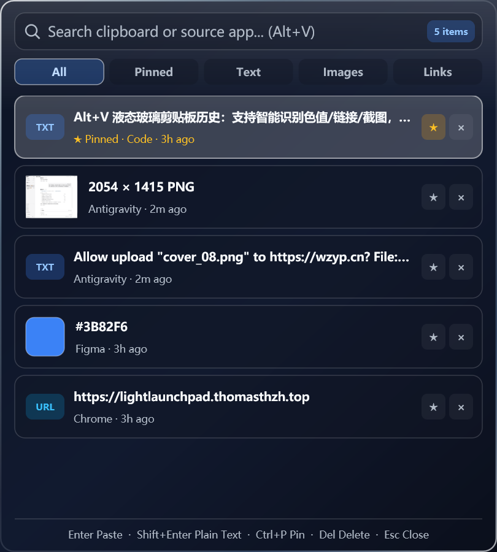

CURSOR-FIRST PLACEMENT
鼠标在哪块屏，聚焦就在哪块屏
以屏幕中央为基准向鼠标偏移 72%，同时自动锁定 24 DIP 安全边界，绝不贴边截断。在下方双屏区域移动并点击鼠标即可实测落位算法：
Display 1
Display 2
Spotlight
WINDOWS NATIVE C++ · MACOS 26 LIQUID GLASS
单文件 3.6 MB 原生启动台。按下 Alt + D，在鼠标所在屏幕唤出真实折射的液态玻璃聚焦窗——零 Electron，零运行时，静默常驻低于 60 MiB。
REAL-TIME OPTICAL ENGINE · DIRECTX 11
内置 Crystal、Frosted、Tinted 三套光学预设，并开放模糊浓度、表面着色与双角高光实时微调。拖动下方滑块，直接感受玻璃光学变化。
实际桌面端由 DirectX 11 着色器渲染 30px 弧面弯月折射带与指针倾斜高光，60Hz 实测帧耗时 P95 ≤ 16.7ms。
CURSOR-FIRST PLACEMENT
以屏幕中央为基准向鼠标偏移 72%，同时自动锁定 24 DIP 安全边界，绝不贴边截断。在下方双屏区域移动并点击鼠标即可实测落位算法：
ZERO-DEPENDENCY IPC
通过原生 Win32 WM_COPYDATA 直连标准版 Everything 1.4 / 1.5，无需任何额外 DLL 或后台服务。未装 Everything 时自动静默降级为纯应用搜索。
DIRECT2D SETTINGS STUDIO · PRIVACY-FIRST
告别传统 Win32 灰框弹窗。整个设置中心由 Direct2D + DirectWrite 硬件绘制，并内建基于 Raw Input 的本地键鼠统计——只做聚合计数，绝不记录输入文本或按键顺序。

READY IN 5 SECONDS
支持 Windows 10 / 11 (x64)。解压即用，首次运行自动导入开始菜单与桌面快捷方式，不污染系统注册表，删除快捷项不会卸载原软件。
LightLaunchpad.NativeUi.exe